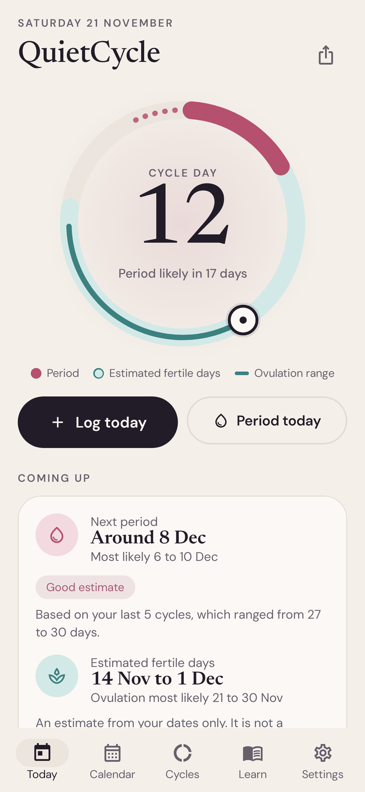
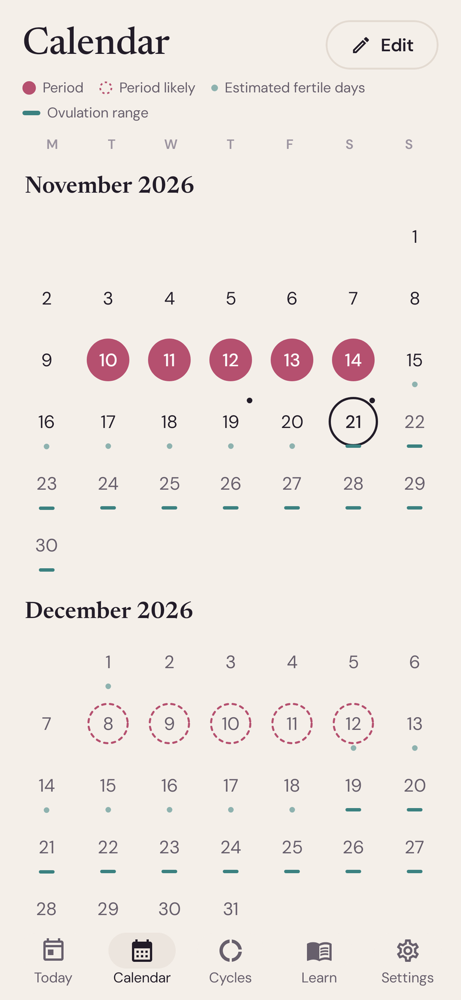
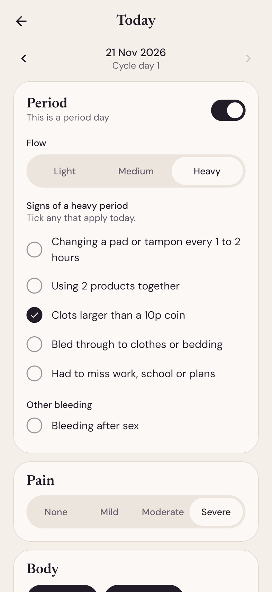
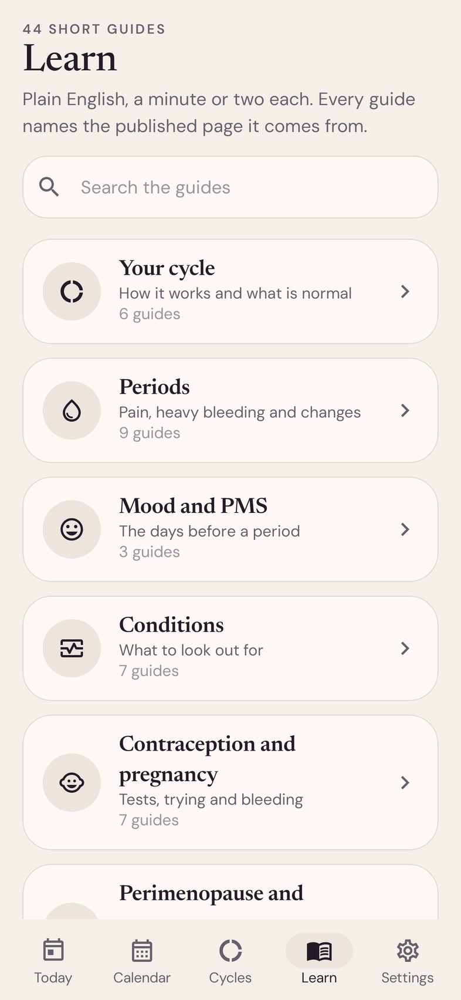
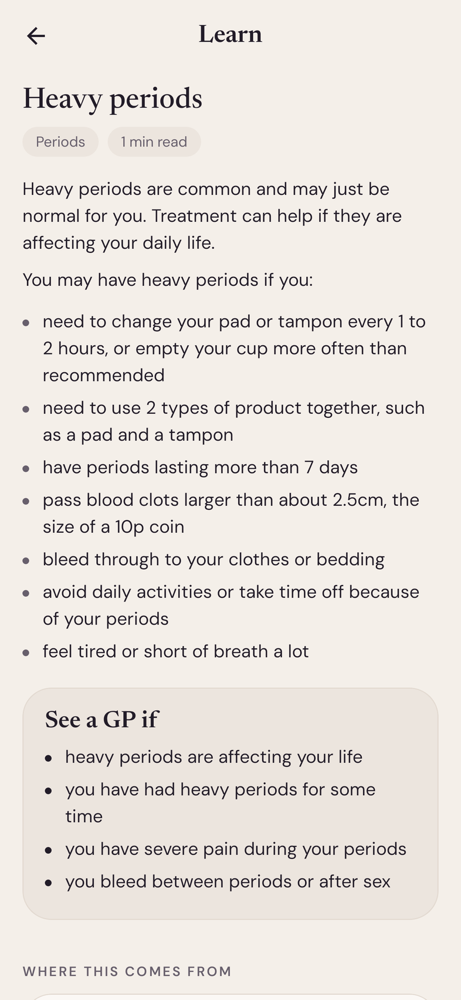
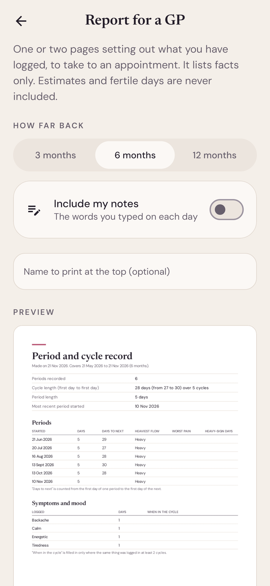
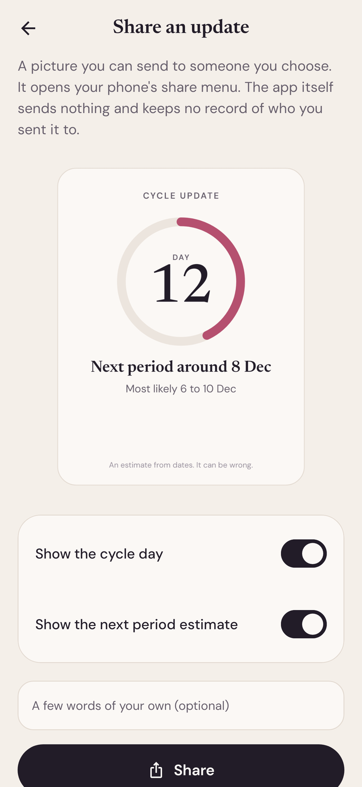
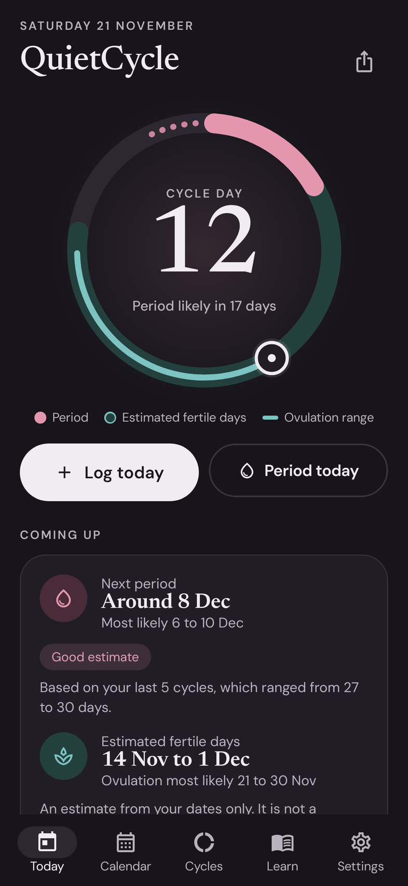

Your cycle, kept to yourself.
QuietCycle is a period and cycle diary for Android. Log your period, symptoms and mood, see when your next period is likely as an honest range, and read short guides drawn from NHS pages.
It is free, with no adverts and nothing to unlock. It does not ask Android for internet access, so it cannot send what you log anywhere. There is no account, and everything is encrypted on your phone.
Download for AndroidHow to install
- Version 1.0.0
- Android 8 or later
- 2.4 MB
Free, with nothing to unlock. No adverts, no account, no tracking. Compare or read the release notes.
Chrome may say the file might be harmful. It shows this for app files that do not come from Google Play. Choose Download anyway.

- No subscriptionEvery guide and tool is in the free app.
- No advertsNone in the app and none on this site.
- Cannot go onlineNo internet permission, so nothing can be sent.
- Honest estimatesA range and how sure it is, never a single guess.
A look inside
These are the real screens, drawn from the app's own code with a made-up diary. Swipe or scroll sideways to see them all.







How it works
A period app should tell you what it knows, admit what it does not, and keep what you tell it to itself. QuietCycle is built around those three things.
Log your periods
Tap the days of your period, now or for past months. Add how you feel if you want to. There is nothing to sign up to.
See what is likely
Your next period appears as a likely date and a range, worked out from your own cycles. The more you log, the narrower the range.
Understand it, and take it with you
Read short guides drawn from NHS pages, spot patterns, and print a clear record for your GP when you need one.
Everything is in, and all of it is free
Nothing below is held back for a paid tier, because there is no paid tier.
Every day
- The cycle ring
- One look shows the day of your cycle, your period days and what is coming, drawn as a ring that fills as the cycle goes on.
- Logging in a few taps
- Flow, pain, the signs of a heavy period, body, mood, discharge and a note. Every tap is saved as you make it.
- A calendar you can edit
- Add or correct period days for any month in one go, including past periods, so the estimates start from your own pattern.
Honest estimates
- A range, not a single date
- Your next period is shown as a likely date with a range either side and a plain label for how sure the estimate is.
- Worked out from your own cycles
- It uses the middle value of your last six cycles, so one odd month does not throw it off. Nothing is assumed to be 28 days.
- Fertile days, clearly marked as an estimate
- Shown as a wide span using the NHS figures, with a reminder each time that it is not a method of contraception. You can switch them off.
For every stage
- Periods just started
- A setting that hides sex, contraception and pregnancy throughout, with five starter guides.
- Trying for a baby, and pregnancy
- NHS advice in the app's own words, with no "best day" prompts. In pregnancy the estimates pause and the weeks are counted.
- Perimenopause
- Extra symptoms to log, and a note when twelve months have passed without a period.
Understanding
- 44 short guides
- Plain English, a minute or two each, on periods, pain, heavy bleeding, PMS, conditions, pregnancy and the menopause. Each names the NHS page it comes from and that page's review date.
- Worth mentioning to a GP
- Gentle cards when what you have logged matches something the NHS says to get checked, such as periods lasting longer than 7 days.
- Patterns, trends and a PMS diary
- See which symptoms come when, how your cycle lengths vary, and compare the week before a period with the week after.
Your record
- A report for your GP
- One or two pages as a PDF: your periods, cycle lengths, heavy-bleeding signs, pain and symptoms. Facts only, with a preview first.
- Backup and spreadsheet
- A backup file locked with your own password, and a plain spreadsheet of every logged day if you want one.
- Share an update
- A simple picture to send to a partner or parent through your own messaging app. The app itself sends nothing.
Private by design
- It cannot go online
- QuietCycle has no internet permission. There is no account, no server, no advertising and no tracking.
- Locked and discreet
- Encrypted on your phone, an optional PIN or fingerprint lock, screenshots blocked, and a home-screen name and icon of your choice.
- Reminders that give nothing away
- A reminder before your period and a daily nudge to log, both off until you switch them on, worded discreetly unless you choose otherwise.
What you log is your business
It cannot go online
The app has no internet permission. Android will not let it send or fetch anything, whatever happens.
Encrypted on your phone
Everything is kept in one encrypted file on the phone. There is no account and no server, and the developer receives nothing.
Copies only when you make them
A report, a backup, a spreadsheet or a shared picture leaves the app only when you save or send it yourself.
Installing and updating
QuietCycle is not on Google Play, so your phone asks a couple of extra questions the first time.
Download the app file
Tap Download on your phone. The file is called QuietCycle.apk and is about 2.4 MB. If Chrome says the file might be harmful, choose Download anyway.
Allow the install
Open the file. The first time, Android asks you to allow your browser to install apps. Allow it, go back and tap Install. If Google Play Protect steps in, choose More details, then Install anyway.
Updating later
QuietCycle never goes online, so it cannot check for updates itself. Settings has a Check for updates link that opens the release notes in your browser. Install the new file over the old one and everything you have logged is kept.
Version 1.0.0, released 22 November 2026. See the release notes, or check your download.
Questions
Is QuietCycle really free?
Yes. There is no paid version, no subscription, no trial and no adverts, and nothing in the app is locked. The report for your GP, the guides and the backup are all free.
Is it on Google Play?
No. QuietCycle is a personal project and is downloaded from this site as an Android app file. It needs Android 8 or later, which covers almost every phone in use.
Does it need the internet?
No. The app does not ask Android for internet access at all, so it cannot go online. The two links in Settings, Check for updates and More apps, open in your own browser.
Where is my information kept?
Only on your phone, in the app's private storage, encrypted with a key held by Android. Nothing is uploaded, there is no account, and the developer receives nothing.
How does it work out my next period?
From your own recent cycles: the middle value of up to the last six. It shows a likely date with a range either side and says how sure it is. The range is wide when there is little to go on and narrows as you log more.
Can I use it as contraception?
No. The estimated fertile days come from dates alone and cannot tell when you actually ovulate. Pregnancy is possible on days outside them. QuietCycle is a diary. A GP, pharmacist or sexual health clinic can help you choose contraception.
Is it a medical device?
No. It is a diary that keeps a record and shows general information. It does not diagnose, treat or prevent anything, and it is not connected with the NHS. The guides are summaries of published NHS pages, written for this app, and each one names its source.
I am on the pill, or have a coil or implant. Does it still work?
Yes, as a diary. Switch on "I use hormonal contraception" and it will still estimate your next bleed from your dates, but it stops estimating ovulation and fertile days.
Is it suitable for someone whose periods have just started?
Yes. Switching on "My periods started recently" hides everything about sex, contraception and pregnancy, allows for early periods being irregular, and puts five starter guides first.
Does it cover pregnancy and the menopause?
There is a pregnancy setting that pauses the estimates and counts the weeks from your last period, and a perimenopause setting with its own symptoms to log. Neither replaces your midwife or GP.
Why can I change the app's name and icon?
Some people would rather a period app did not announce itself on their home screen. You can show it as QuietCycle, Journal, Notes, Daily, Diary or Planner, with one of eight icons. Reminders give nothing away unless you ask them to.
What if I forget my PIN?
There is no way round the PIN, not even for the developer. You can clear the app's storage in your phone's settings, which deletes everything, and then restore your latest backup.
How do I move to a new phone?
In Settings, open Back up and export, choose a password and save a backup file. Install QuietCycle on the new phone, choose Restore from a backup and enter the same password.
Who made it?
QuietCycle is made by Jonathan Jackson, an independent developer in the United Kingdom. It is not connected with the NHS or with the maker of any other app.
Your cycle, kept to yourself
Free, with no adverts and nothing to unlock. Made by the developer of several other free Android apps: see them all.